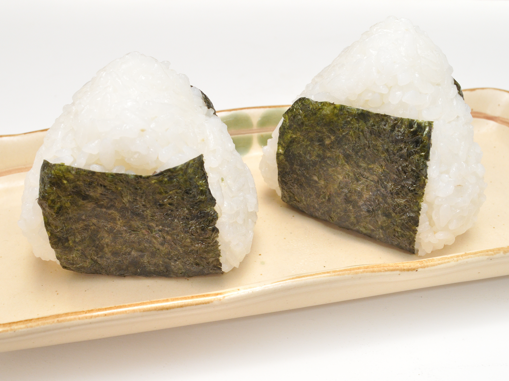
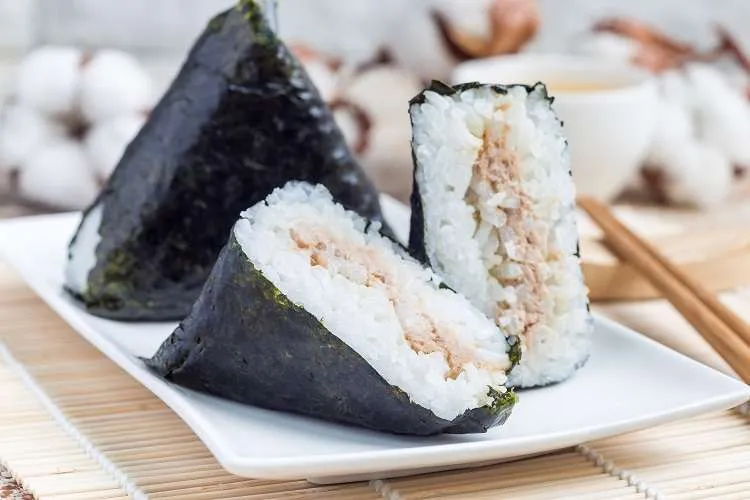
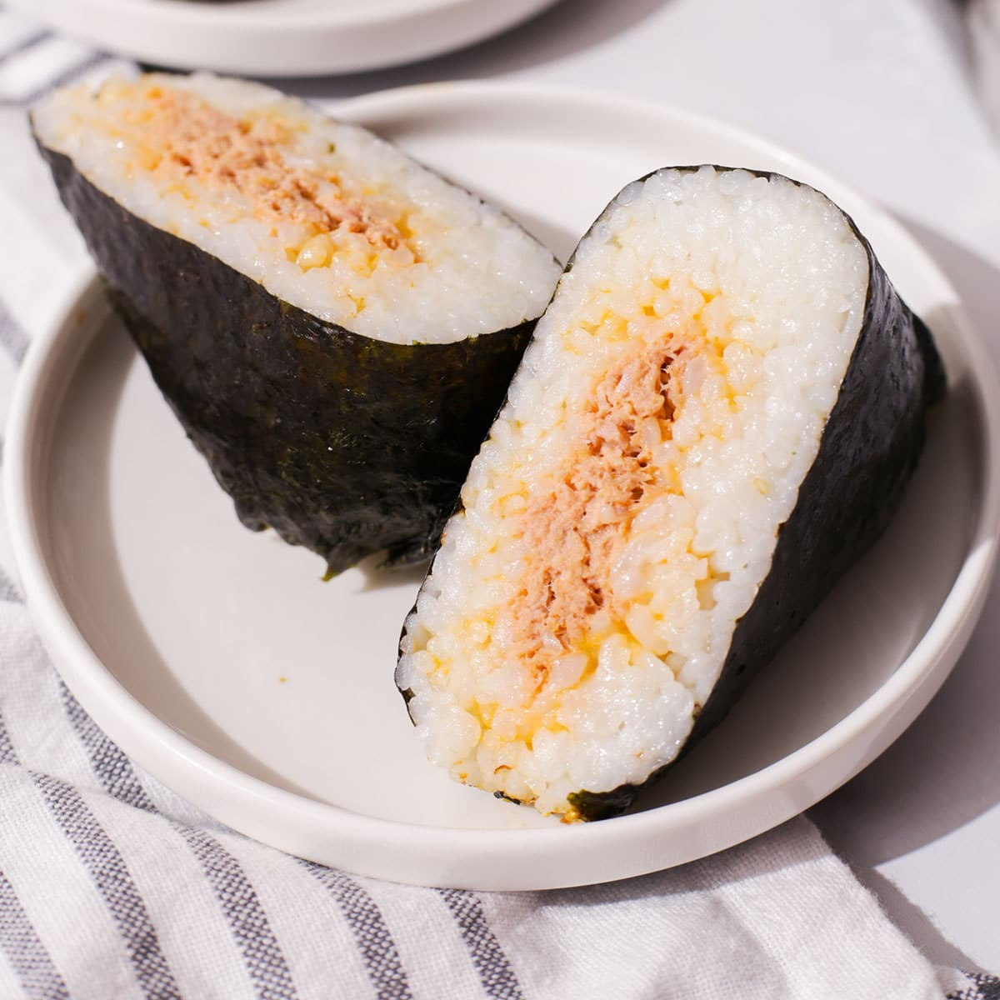

Onigiri
Onigiri, or rice balls, are a beloved Japanese snack made from seasoned rice, often shaped into triangles or balls. Traditionally wrapped in nori (seaweed), they can be filled with a variety of ingredients, such as pickled plum (umeboshi), grilled salmon, or seasoned seaweed. Onigiri are not only convenient for on-the-go meals, but also symbolize comfort and nostalgia in Japanese culture. They are commonly enjoyed during picnics, road trips, or as a quick lunch. The versatility of onigiri, combined with its simple yet satisfying flavors, makes it a cherished dish that transcends generations. You can choose your own preference of onigiri, from vegan options to meaty options, such as salmon and tuna!
Discover Our Delicious Onigiri Flavors! 🍙
We're excited to offer a variety of onigiri flavors, from traditional classics to modern favorites. Here’s a taste of what you can enjoy:
- Umeboshi (Pickled Plum)
- Sake (Grilled Salmon)
- Tuna Mayo
- Tarako (Salted Cod Roe)
- Tenmusu (Tempura Shrimp)
- Natto (Fermented Beans)

